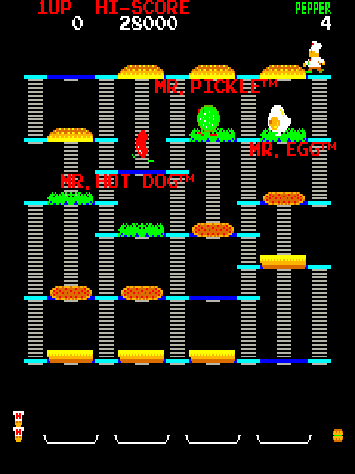
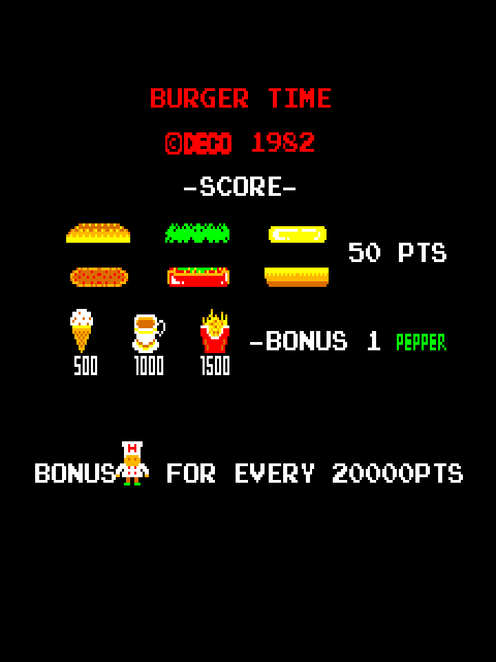
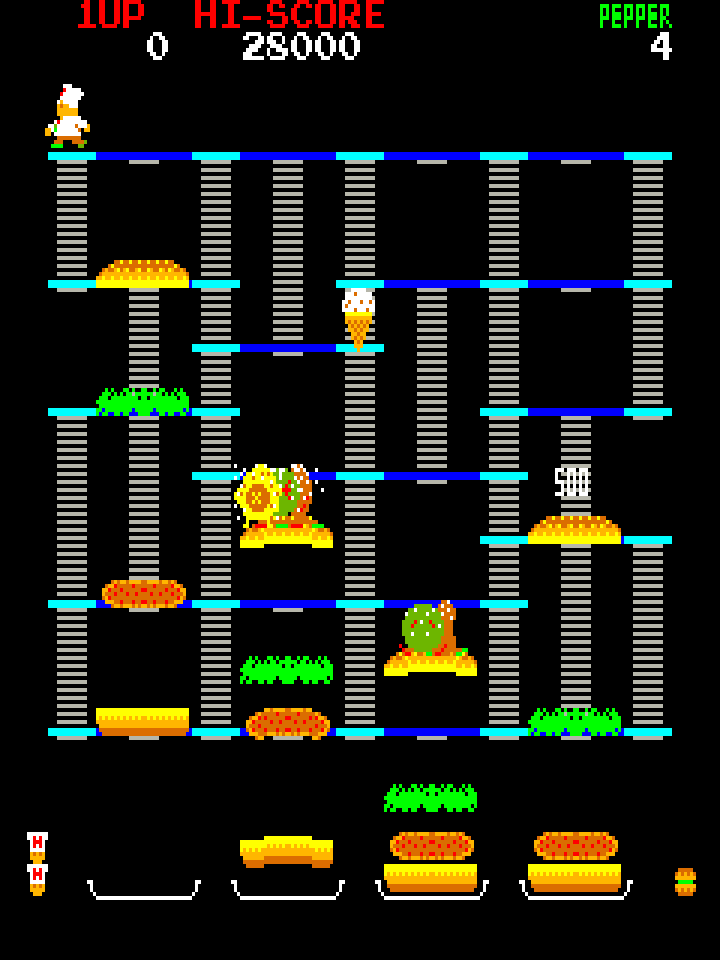
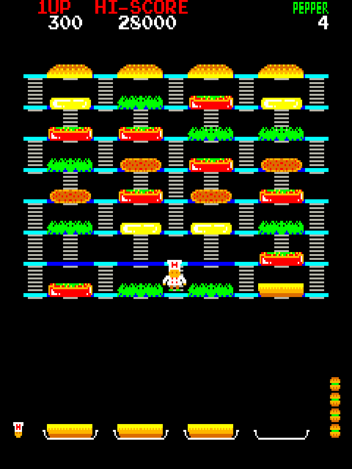
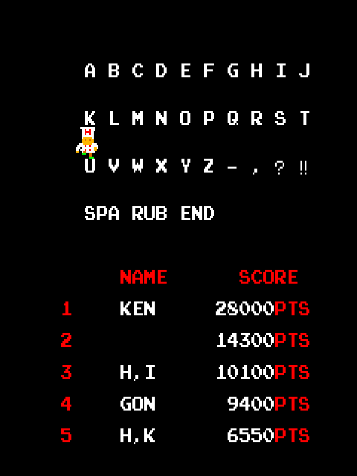
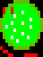
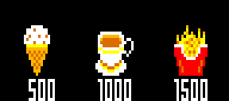

Burger Time
Peter Pepper, four giant burgers and a kitchen full of angry food. The arcade board's own programs, the game and its sound, translated into JavaScript one instruction at a time with every cycle counted, so every chase, drop and jingle plays as it did in the cabinet.

How to play
Walk across every burger part to drop it a floor; parts that land on the one below knock it down too. Get all of them onto the plates at the bottom to clear the stage. The food chases you the whole time. A shake of pepper stuns them, and you start with only five.
At the controls
- Walk←→ or AD
- Climb↑↓ or WS
- PepperSpace / Z / X
- Coin · Start5 · 1 2
- Coin and 1P startEnter
- Pause · MuteP · M
On a gamepad
- The joystickstick or D-pad
- PepperA · B · X · Y
- Coin and startStart
- PauseBack
The cabinet's stick is 4-way: hold two directions and the last one pressed wins. Sound starts after your first click or key press, which is the browser's rule, not the cabinet's.
Points and extras
Every burger part you drop is 50 points. Ice cream, coffee and fries show up mid-stage for 500, 1000 and 1500, and each one gives you a pepper as well.
A bonus chef every 20,000 points, three to start with, as the factory DIP switches set them.




Who's who
Peter Pepper
The chef. Walks the floors, climbs the ladders and carries the pepper.
Mr. Hot Dog
The first of the three the attract mode introduces, by name and trademark.

Mr. Pickle
Chases on the same floors and ladders.
Mr. Egg
The third. A shake of pepper stops any of them for a moment.

Bonus food
Shows up during a stage: 500, 1000 or 1500 points and one more pepper.
Built from the ROM
This is not an emulator, and not a remake. A translator read the board's two 6502 programs, the game and the sound, and wrote out each instruction as a line of JavaScript with its cycle count. The translated programs run on models of the main board (video, sprites, palette) and the sound board (two AY-3-8910 chips and the analog mixer). The real ROMs run on a 6502 interpreter beside them to prove the two match, and that interpreter is checked against MAME.
- The main CPU is Data East's CPU-7, a 6502 that unscrambles an opcode's bits when the previous instruction wrote to memory and the opcode sits at an address matching
xxxx xxx1 xxxx x1xx. The same address can hold two different instructions, so the translator keeps both. - The program writes 298 times to three bytes it never reads (
$F5–$F7). Those writes can only change how the next opcode is decoded. - There is no vertical blank interrupt: the game polls a bit wired into a DIP switch port. The main CPU's only interrupt is the coin slot.
- The coin routine checks the credit limit with
CMP $D064,Y, using whatever Y the interrupted code left, so it can read the program's own code as data. The port keeps those bytes too. - Six stage layouts repeat: stage 7 is stage 1 again. They need 16, 16, 18, 32, 16 and 18 parts on the plates.
- Channel A of the second sound chip goes through its own band-pass filter around 190 Hz; the other five channels are mixed straight.
Developer pages
- Game only: the player on a page of its own
- Verifying against the ROMs: the translator, the oracle and the MAME comparisons